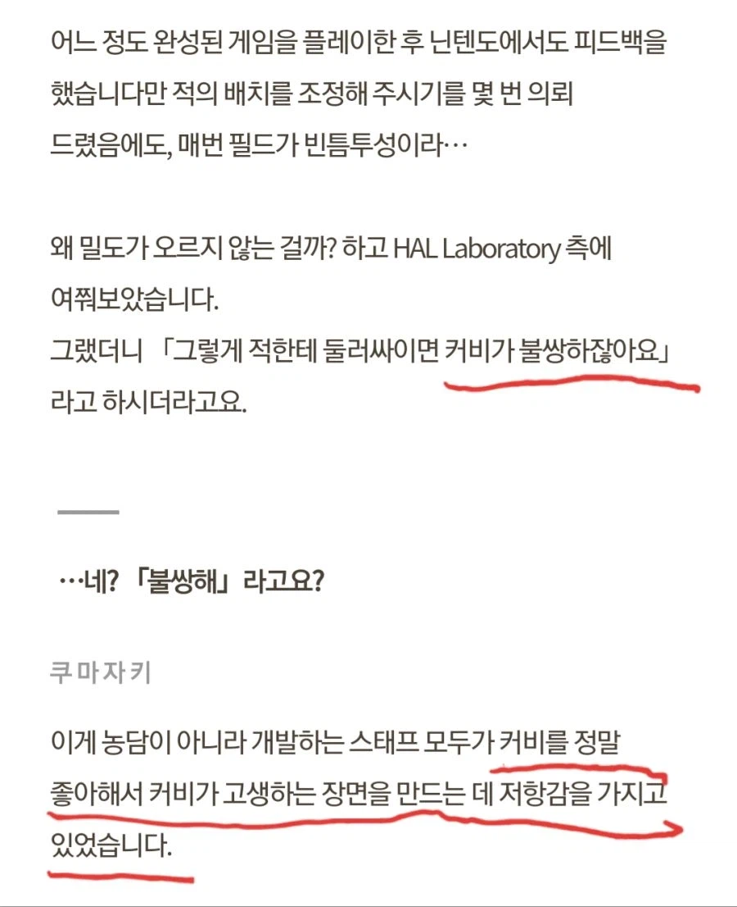

커비가 주인공이지만 얘는 너무 커여워서 고생하는 거 보기 좀 불쌍하다
(그렇게 커비가 불쌍해서 나온 패턴들)
참고로 별의 커비 시리즈는 전체적인 난이도는 평범하지만 최종보스전 난이도는 개같이 어렵기로 악명이 높다

커비가 주인공이지만 얘는 너무 커여워서 고생하는 거 보기 좀 불쌍하다
(그렇게 커비가 불쌍해서 나온 패턴들)
참고로 별의 커비 시리즈는 전체적인 난이도는 평범하지만 최종보스전 난이도는 개같이 어렵기로 악명이 높다
갑자기 다크소울 되네 ㅋㅋㅋㅋㅋㅋㅋㅋㅋㅋ
커비는 언제 봐도 귀여워
별의미궁도 보스 어려웠던거 같은데 ㅋㅋㅋㅋ
커비 존재 자체가 크툴루적 무언가잖아...!
커비로 엘든링을 하네ㅋㅋ
야숨은 처음 할때는 그래도 꽤 난이도 있던데
공략법 알게 되고 나니까 걍 쉽네 하다가도 마스터모드로 가니까 겁나 빡셈